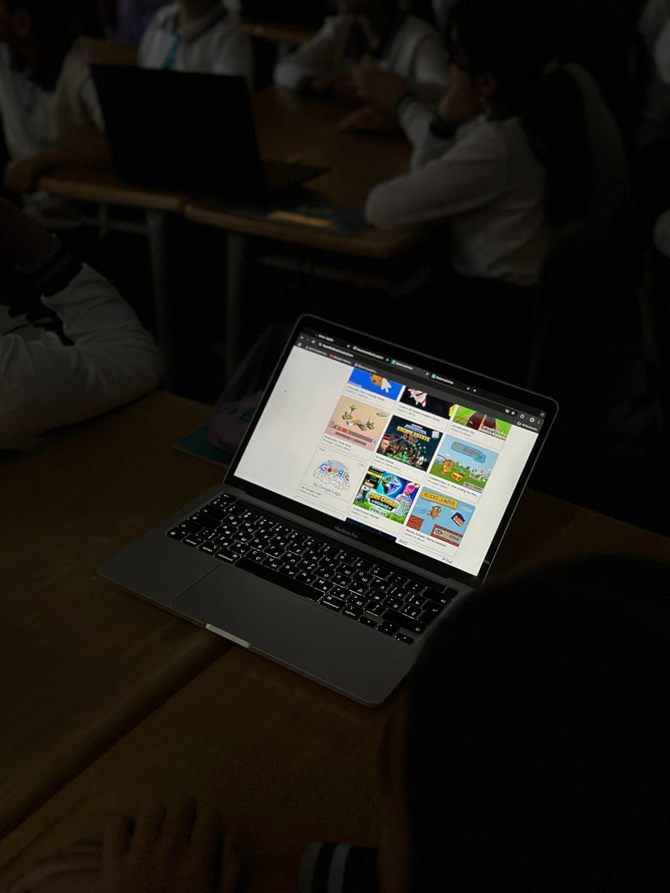

Team recently organized an engaging and educational Hour of Code session for 30 enthusiastic 6th-grade students from Chiragli Village Secondary School in Lachin District. This initiative aimed to introduce the fundamentals of coding, enhance problem-solving skills, and ignite a passion for programming in young learners, particularly in a school facing significant resource challenges. To address the limited availability of electronic devices, students were divided into small groups of 5–6, ensuring active participation and collaboration. Each group was provided with a computer or tablet, creating an inclusive learning environment where every student could contribute.
Students guessed the course topic as they discovered Minecraft and Angry Birds-themed coding activities on their devices. These popular games captured their attention and helped make learning about algorithms fun and relatable. Starting with basic commands like "move forward" and "turn left/right," students gradually advanced to more complex concepts such as loops and conditional statements. Practical examples, including the "repeat" block and "if" statements, were used to illustrate these concepts. Though initially challenging, the children quickly mastered these skills with practice and guidance.
By choosing Chiragli Village Secondary School—a location with limited resources—Team not only inspired students but also addressed a critical gap in educational opportunities. With support from the school administration and the dedication of the team, the Hour of Code session became a stepping stone for a brighter future for these young learners.